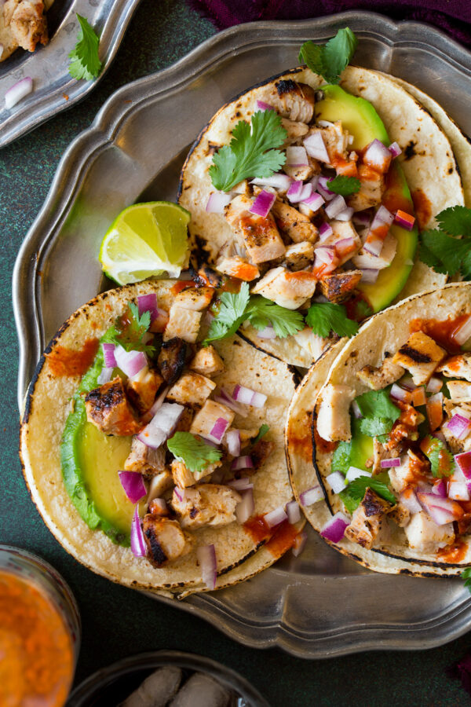

You’ll love this street taco recipe not only because they taste amazing, but also because it’s one of those easy to throw together recipes and you can also get a head start it a few hours in advance with the marinating.
If you want to go all out, you can serve them with carne asada tacos as well (just slice strips into small pieces). I love getting each kind when I get them on the street in Mexico or in restaurants, so one of these days I’m going to feel ambitious and make all three at once (chicken, carne asada and carnitas).